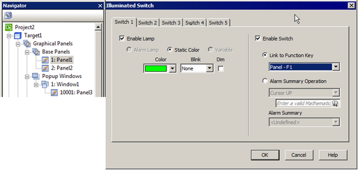
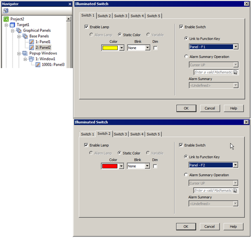

|
|
|
|
|
|
|
|
At the Panel node, you can configure the illuminated switch as lamps with a static color. You can also configure the illuminated switch as switches, in order to link to panel function keys or to an alarm summary.
To set up, first you need to add the illuminated switch driver to your project. For more information, see Section 24.8.1, Adding the Illuminated Switch.
In the Navigator window's Project tab, expand the Base Panels and click a panel.
In the panel properties, click the ellipsis next to the Illuminated Switch to open the Illuminated Switch dialog box.
Configure the illuminated switch settings in the Switch 1 to Switch 5 tabs.
Click OK.

The Illuminated Switch configuration at the panel node is only available for Base panels.
You must configure a function key before you can link it to the illuminated switch.
The Alarm console does not support Event Groups.
You can link an illuminated switch switch to both panel and target function keys. At run time, both operations execute simultaneously.
Enabling the illuminated switch lamps at the Target node disables lamps at the Panel node.
For example, you want to link the illuminated switch to panel function keys and customize the lamp colors. To do so:
Configure the following function keys. For information on how to create panel function keys, see Section 24.5.2, Panel Function Key.
Panel 1 F1: Bit, Toggle, Bool01
Panel 2 F1: Popup, Open Popup
Panel 2 F2: System, Configuration
Add an illuminated switch to your project. For more information, see Section 24.8.1, Adding the Illuminated Switch.
Edit and print labels for your illuminated switch as needed. For more information, see Section 24.8.2.1, Illuminated Switch at Device Level.
Click the Panel1 node. In the panel properties, click Illuminated Switch to open the Illuminated Switch dialog box.
In Switch 1 tab, select the Enable Lamp check box and set its color to green. Select the Enable Switch check box and Link to Function Key option and set it to Panel - F1. Click OK.
Repeat step 4 for Panel 2, and configure the illuminated switch as follows:
|
|
Switch 1 tab: 1. Select the Enable Lamp check box and set its color to yellow. 2. Select the Enable Switch check box and Link to Function Key option and set it to Panel - F1. |
|
|
Switch 2 tab: 1. Select the Enable Lamp check box and set its color to red. 2. Select the Enable Switch check box and Link to Function Key option and set it to Panel - F2. |
Click OK.


At run time, when you view Panel 1 on the target machine, Switch 1 on the illuminated switch turns green. Press Switch 1 to toggle the value of variable Bool01.
When you view Panel 2 on the target machine, on the illuminated switch, Switch 1 turns yellow while Switch 2 turns red. Press Switch 1 to popup window, or press Switch 2 to go to the Configuration menu.